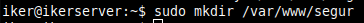

Pràctica 3: Certificat SSL/TLS
Creación Certificado
Crearemos el certificado autofirmado.

Luego nos dirá que pongamos unos datos.

Automatizar creación del certificado autofirmado
Automatizamos creando un script.

Consultar certificado
Consultar información del sujeto del certificado.

Consultar la fecha de caducidad del certificado.

Configurar un Block SSL/TSL en Nginx
Configurar el Bloc SSL Configuramos el sitio seguro ssl.

Creamos el sitio seguro Creamos el siguiente directorio.

Creamos el documento de inicio.

Aplicamos cambios y reiniciamos el servicio.

Verificamos el correcto funcionamiento Desde un cliente accedemos por IP.

Vemos que nos salta una alerta de advertencia, en Avanzado aceptamos el riesgo.

Ahora volvemos a entrar con el nombre de la página.

Volvemos a realizar el proceso para acceder.

Block de redirección de HTTP a HTTPS.
En el bloque de por defecto default y añadimos las siguientes líneas.

Reiniciamos el servicio y entramos en el navegador pero con el enlace con http.

Y al buscar, vemos que nos redirigió a https.